Iron
Coverage incomplete · not ready for generation
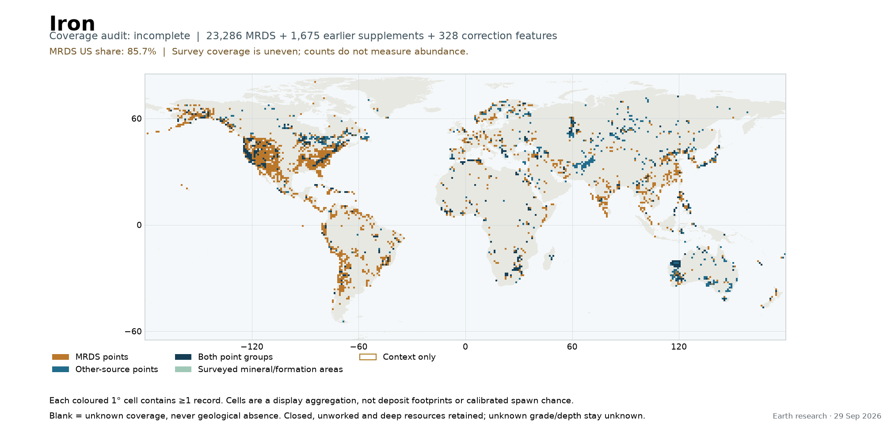
Deep concealed and low-grade iron remains evidence; do not replace Staicele basement ore with shallow limonite.
Resource review · Baseline points
328 correction point links; 0 correction area links. Sources overlap; these are not unique deposits.
Gold
Coverage incomplete · not ready for generation
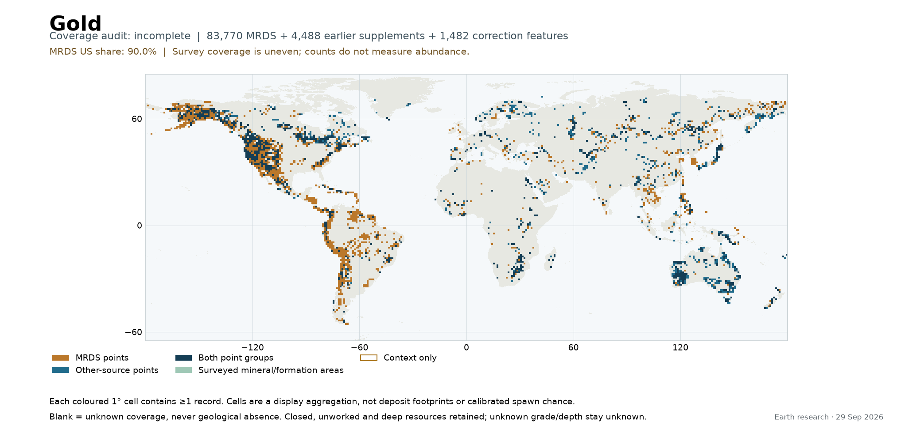
Historic/exhausted placers and districts matter even when absent from modern mine lists; native gold is not guaranteed by every elemental record.
Resource review · Baseline points
1,482 correction point links; 0 correction area links. Sources overlap; these are not unique deposits.
Silver
Coverage incomplete · not ready for generation
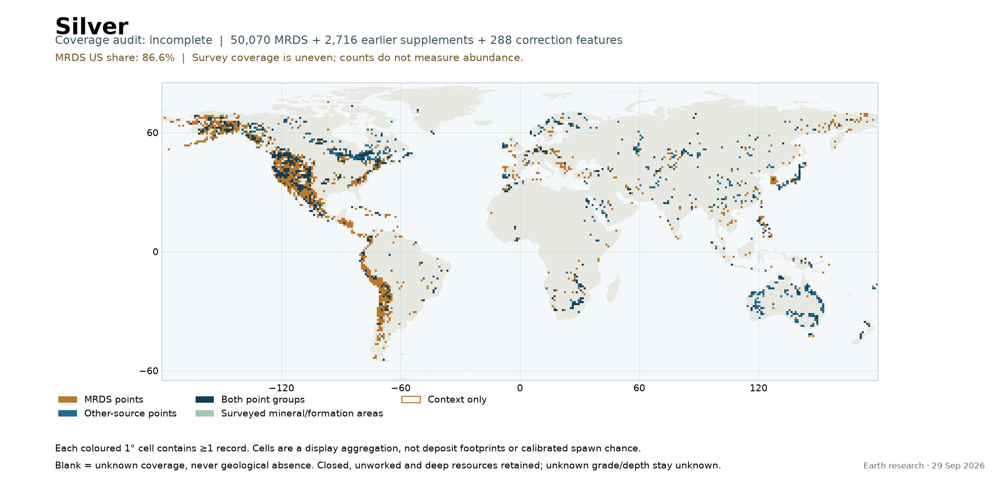
Byproduct silver is not necessarily native silver or freibergite; historical workings and obsolete production must remain.
Resource review · Baseline points
288 correction point links; 0 correction area links. Sources overlap; these are not unique deposits.
Lead
Coverage incomplete · not ready for generation
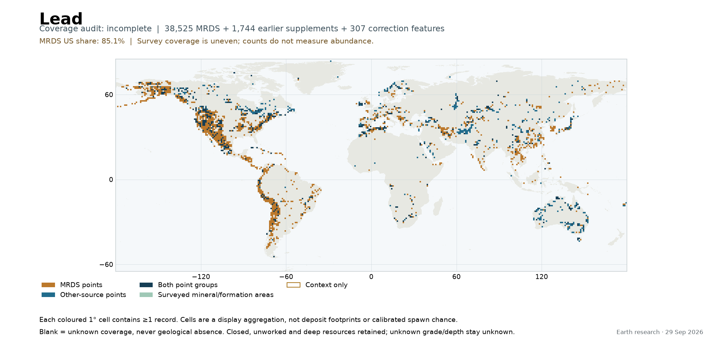
Galena versus weathered cerussite requires mineral evidence; deep concealed districts cannot be promoted to surface resources.
Resource review · Baseline points
307 correction point links; 0 correction area links. Sources overlap; these are not unique deposits.
Zinc
Coverage incomplete · not ready for generation
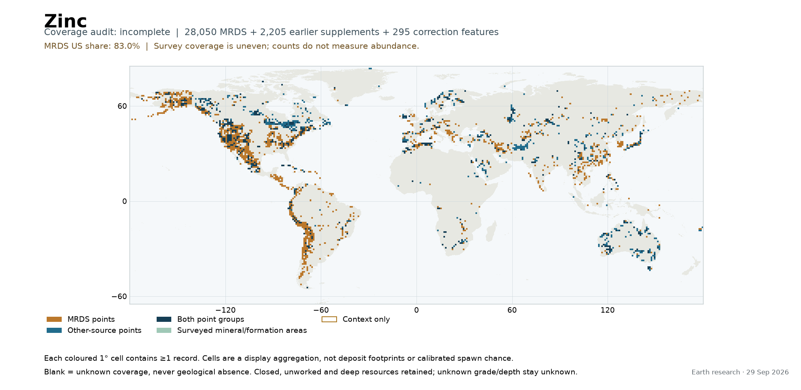
Elemental zinc is not proof of sphalerite, smithsonite or hemimorphite; trace zinc is not a zinc orebody.
Resource review · Baseline points
295 correction point links; 0 correction area links. Sources overlap; these are not unique deposits.
Bismuth
Coverage incomplete · not ready for generation
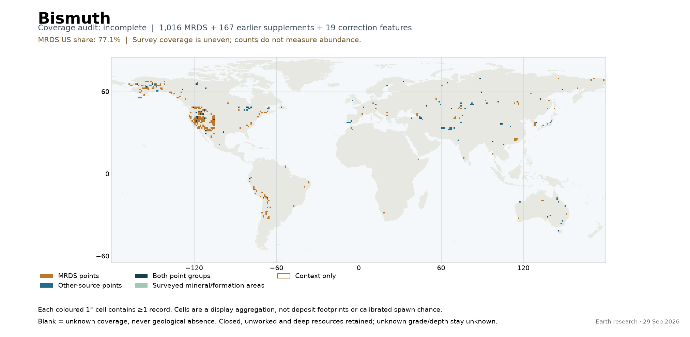
MCS refinery countries are not local ore locations; common unreported byproduct/trace Bi makes pure commodity mapping underinclusive.
Resource review · Baseline points
19 correction point links; 0 correction area links. Sources overlap; these are not unique deposits.
Nickel
Coverage incomplete · not ready for generation
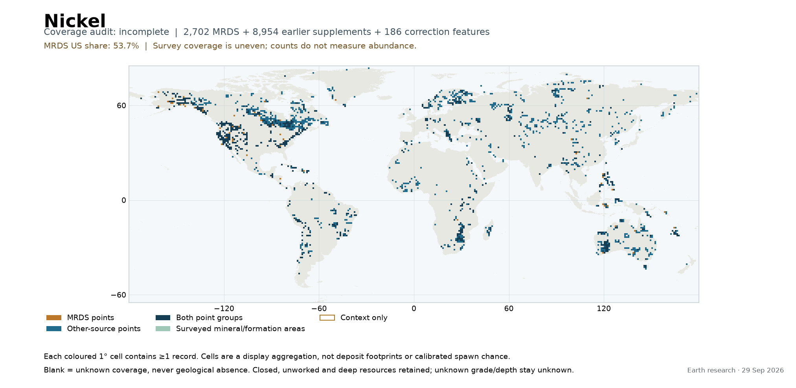
Laterite cannot become pentlandite. Retain exploration showings, depleted sulfide workings and uneconomic disseminated ore.
Resource review · Baseline points
186 correction point links; 0 correction area links. Sources overlap; these are not unique deposits.
Chromium
Coverage incomplete · not ready for generation
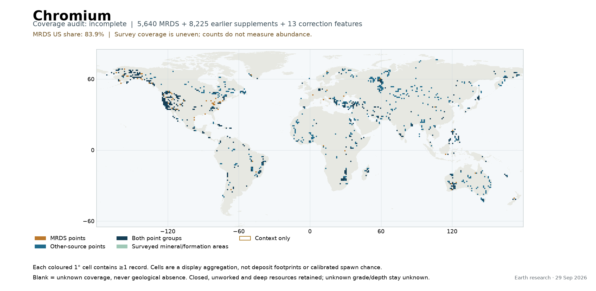
Do not mark all ultramafic rock as chromite; small pods and subeconomic disseminations differ from giant layered deposits.
Resource review · Baseline points
13 correction point links; 0 correction area links. Sources overlap; these are not unique deposits.
Titanium
Coverage incomplete · not ready for generation
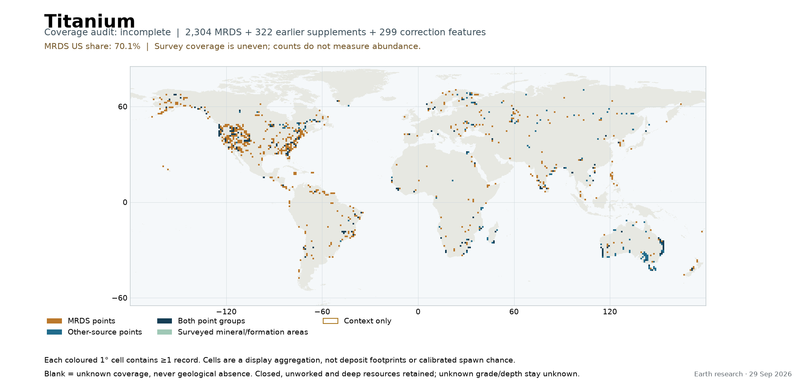
Titanium minerals/concentrates not titanium sponge/refinery production; mineral sands do not identify ilmenite versus rutile.
Resource review · Baseline points
299 correction point links; 0 correction area links. Sources overlap; these are not unique deposits.
Manganese
Coverage incomplete · not ready for generation
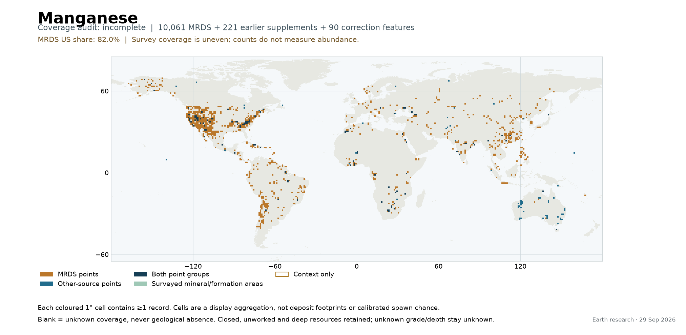
Most Mn evidence is oxide ore, not rhodochrosite; Latvia Mn-oxide assays are associated mineralization, not a separate proven Mn mine.
Resource review · Baseline points
90 correction point links; 0 correction area links. Sources overlap; these are not unique deposits.
Mercury
Coverage incomplete · not ready for generation
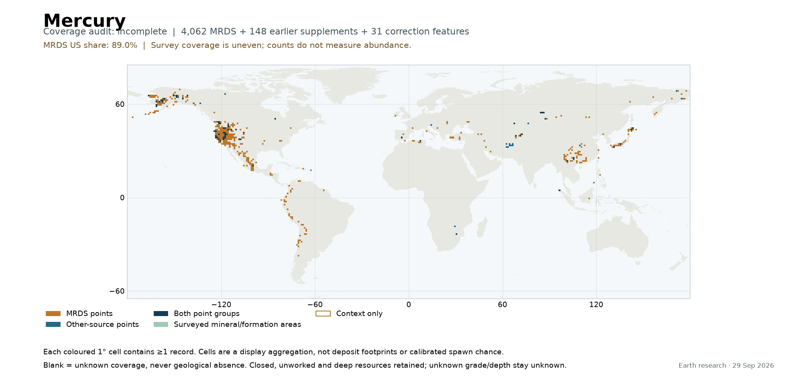
A modern production filter erases Almaden/Idrija and other closed historic sources. Recycled Hg, export and byproduct recovery are not new cinnabar deposits.
Resource review · Baseline points
31 correction point links; 0 correction area links. Sources overlap; these are not unique deposits.
Tungsten
Coverage incomplete · not ready for generation
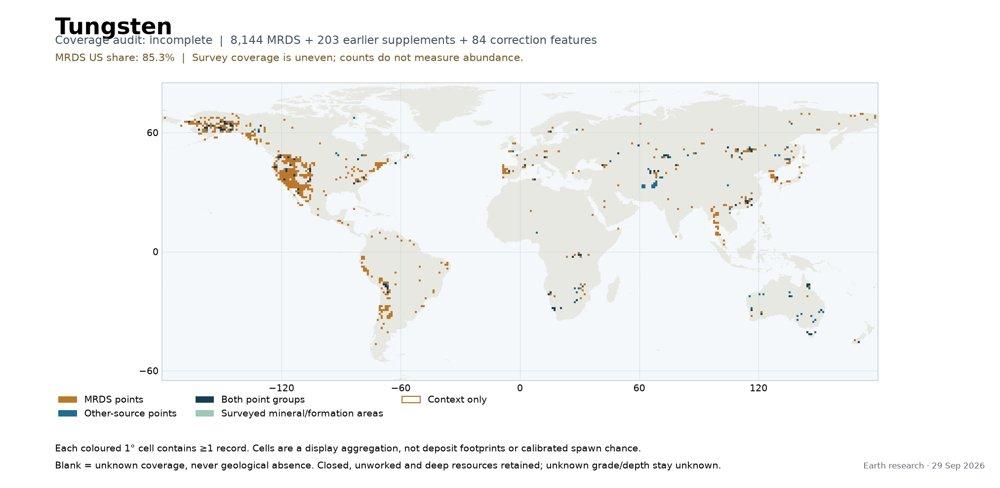
Scheelite is not wolframite. Granite fertility, contacts, veins, depth and weathered/placer derivatives must be kept separately.
Resource review · Baseline points
84 correction point links; 0 correction area links. Sources overlap; these are not unique deposits.
Uranium
Coverage incomplete · not ready for generation
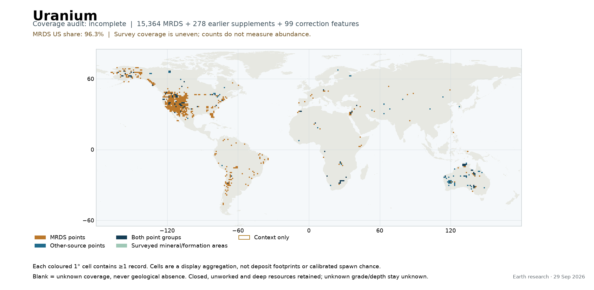
MCS nonfuel tables do not supply a full U inventory; UDEPO includes occurrences and low-grade/unconventional resources, but is not acquired here.
Resource review · Baseline points
99 correction point links; 0 correction area links. Sources overlap; these are not unique deposits.
Platinum/PGE
Coverage incomplete · not ready for generation
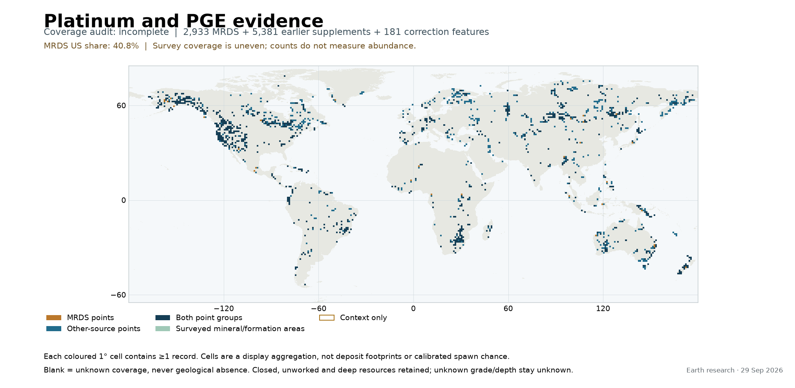
PGE or Pd-only evidence is not native platinum/sperrylite; historical alluvials need their own source-to-placer evidence.
Resource review · Baseline points
181 correction point links; 0 correction area links. Sources overlap; these are not unique deposits.
Vanadium
Coverage incomplete · not ready for generation
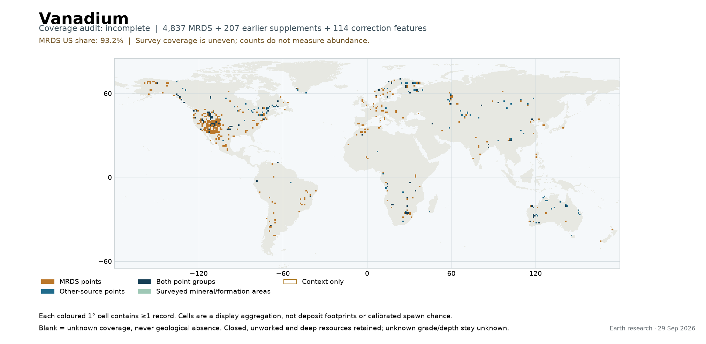
Vanadium in oil/ash/phosphate is not vanadinite. Australia has reserves despite zero production in the cited table.
Resource review · Baseline points
114 correction point links; 0 correction area links. Sources overlap; these are not unique deposits.
Molybdenum
Coverage incomplete · not ready for generation
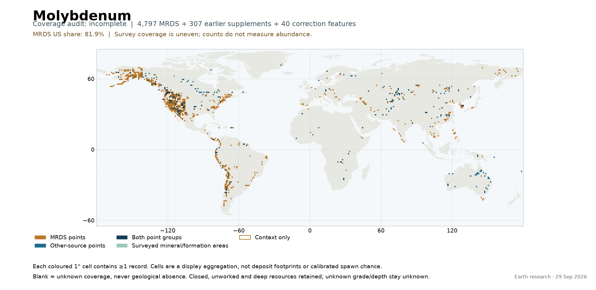
Low-grade bulk-mined porphyry presence does not prove hand-recoverable ore. Associated Mo can be missed when source commodities are primary-only.
Resource review · Baseline points
40 correction point links; 0 correction area links. Sources overlap; these are not unique deposits.
Antimony
Coverage incomplete · not ready for generation
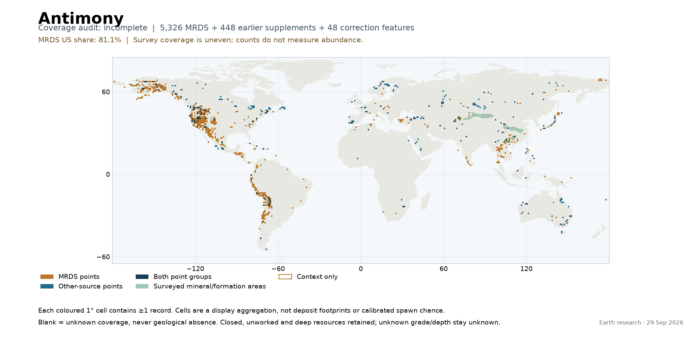
Stibnite or antimony content does not prove tetrahedrite/freibergite; old workings and unmined resources remain relevant.
Resource review · Baseline points
44 correction point links; 4 correction area links. Sources overlap; these are not unique deposits.
Boron / borates
Coverage incomplete · not ready for generation
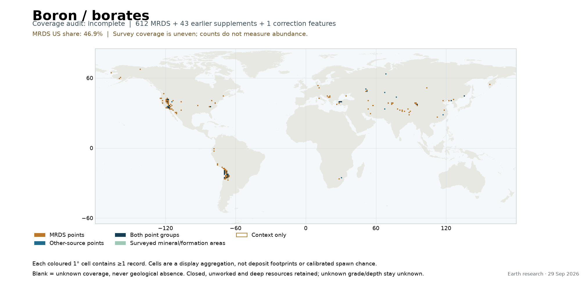
Borax/kernite, colemanite/ulexite and borate brines must remain separate. Sparse mines do not describe volcanic-lacustrine basin potential.
Resource review · Baseline points
1 correction point links; 0 correction area links. Sources overlap; these are not unique deposits.
Phosphates
Coverage incomplete · not ready for generation
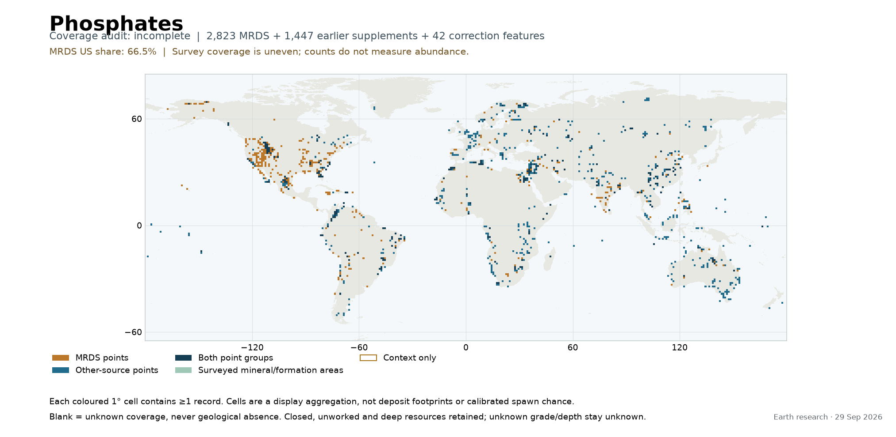
Large specialist inventory helps, but an apatite/carbonatite point cannot generate sedimentary phosphorite. Offshore resources are a separate accessibility class.
Resource review · Baseline points
41 correction point links; 1 correction area links. Sources overlap; these are not unique deposits.
Nitrates
Coverage incomplete · not ready for generation
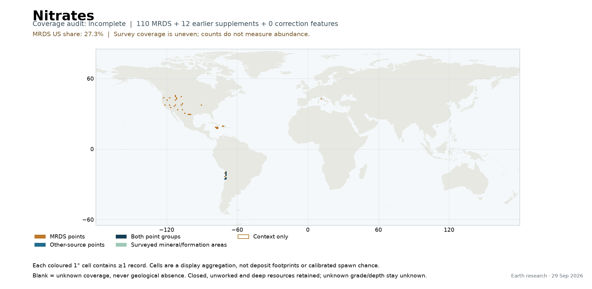
Generic nitrate geography omits biological/cave and historical processing sources. Sodium and calcium nitrate evidence is not proof of naturally occurring potassium nitrate blocks.
Resource review · Baseline points
0 correction point links; 0 correction area links. Sources overlap; these are not unique deposits.
Potassium / potash
Coverage incomplete · not ready for generation
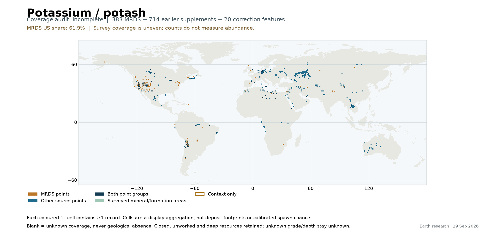
Permissive tracts are available but include brines and deeply buried strata. Modern mine closure does not remove potash geology.
Resource review · Baseline points
15 correction point links; 5 correction area links. Sources overlap; these are not unique deposits.
Salt / halite
Coverage incomplete · not ready for generation
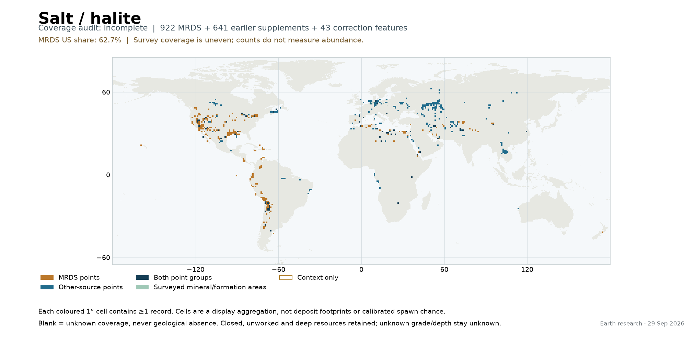
Existing potash supplement is not a global halite inventory. Sea-salt works and salt lakes are not underground halite evidence. Sparse known kernels cannot justify exclusion elsewhere.
Resource review · Baseline points
14 correction point links; 29 correction area links. Sources overlap; these are not unique deposits.
Sulfur, including sulfide feed
Coverage incomplete · not ready for generation
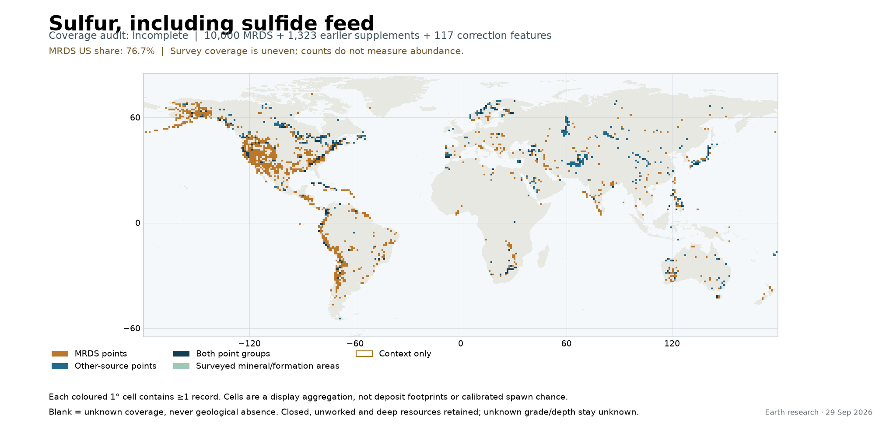
Composite sulfur layer is dominated by pyrite/sulfide feed. It cannot locate native sulfur; refinery recovery is another distinct source.
Resource review · Baseline points
97 correction point links; 20 correction area links. Sources overlap; these are not unique deposits.
Graphite
Coverage incomplete · not ready for generation
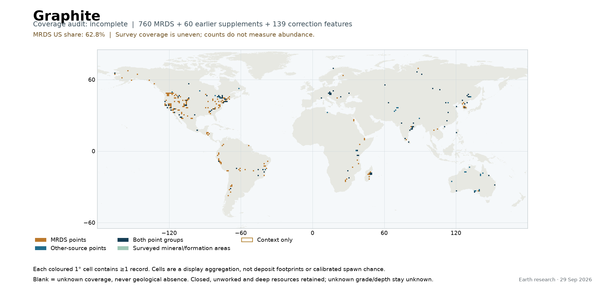
Mine-only or US-weighted points miss graphite-bearing metamorphic units and undeveloped resources. Flake, vein and amorphous graphite differ.
Resource review · Baseline points
139 correction point links; 0 correction area links. Sources overlap; these are not unique deposits.
Coal, all ranks
Coverage incomplete · not ready for generation
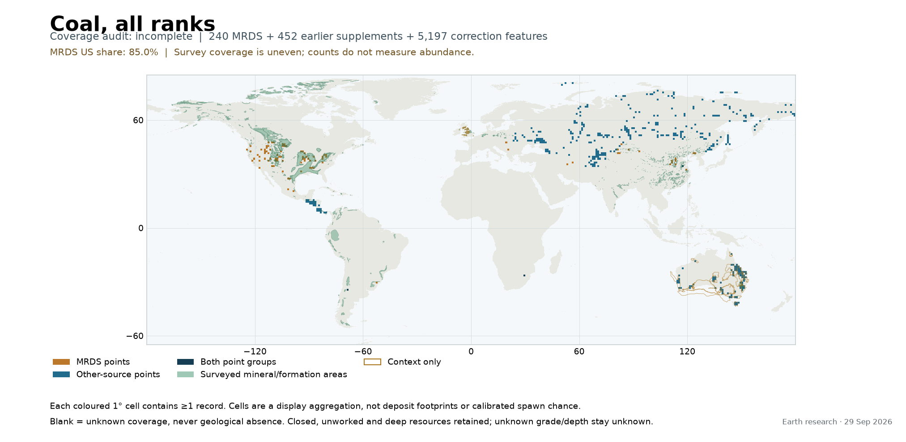
Coal-bearing strata, mining areas, concealed coal, coalfield boundaries, mining-workings buffers and entire sedimentary basins have different meanings.
Resource review · Baseline points
564 correction point links; 4,633 correction area links. Sources overlap; these are not unique deposits.
Fluorite
Coverage incomplete · not ready for generation
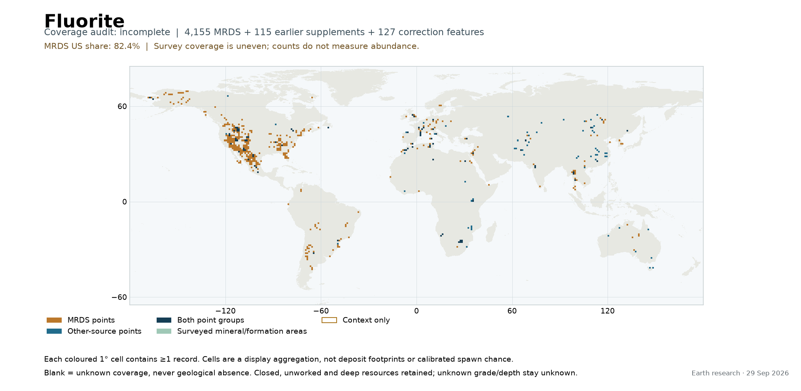
Elemental fluorine in phosphate cannot automatically become fluorite. Existing record density badly overweights US coverage.
Resource review · Baseline points
125 correction point links; 2 correction area links. Sources overlap; these are not unique deposits.
Quartz / silica
Coverage incomplete · not ready for generation
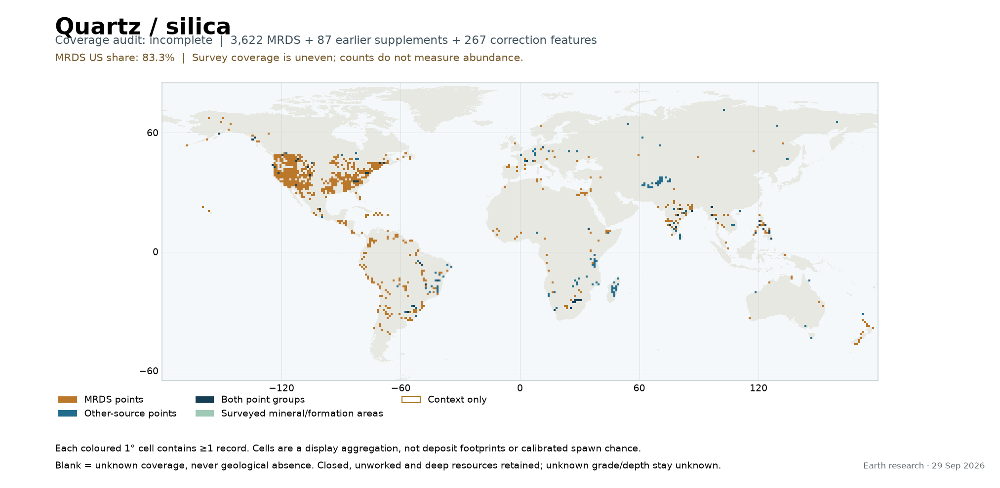
Ore-field/silica-mine points are fundamentally the wrong availability model for ordinary quartz. Gangue quartz and common rock-forming quartz were excluded; electronic-grade quartz has a much narrower distribution.
Resource review · Baseline points
173 correction point links; 94 correction area links. Sources overlap; these are not unique deposits.
Aluminium/bauxite
Coverage incomplete · not ready for generation
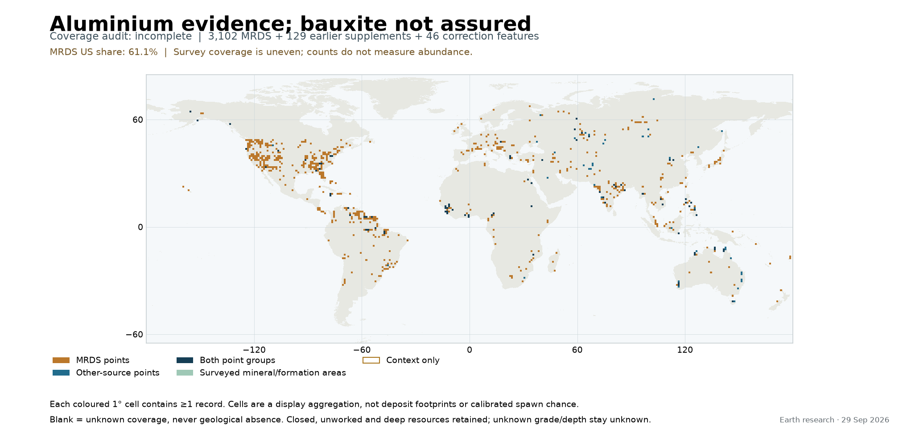
Exclude refinery-only countries from bauxite alarms. Aluminium-bearing clay/anorthosite/alunite is real subeconomic Al evidence, not bauxite.
Resource review · Baseline points
46 correction point links; 0 correction area links. Sources overlap; these are not unique deposits.
Gypsum / anhydrite
Coverage incomplete · not ready for generation
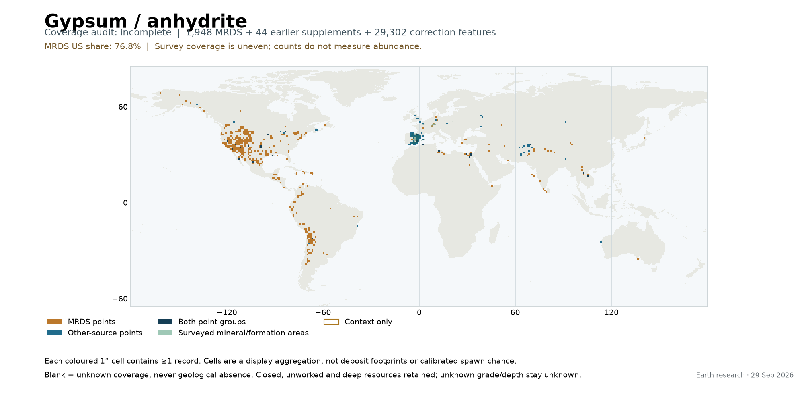
Gypsum, anhydrite, mixed evaporitic formations and commercial quarry footprints are not interchangeable.
Resource review · Baseline points
528 correction point links; 28,774 correction area links. Sources overlap; these are not unique deposits.
Diamond
Coverage incomplete · not ready for generation
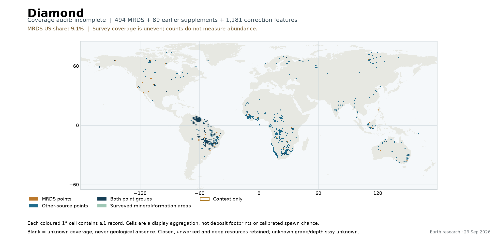
MRDS alone misses many recorded districts. Legacy DIADATA adds historical/nonmined occurrences but includes imprecise gazetteer positions and stops around 2004.
Resource review · Baseline points
1,181 correction point links; 0 correction area links. Sources overlap; these are not unique deposits.
Corundum, including ruby / sapphire
Coverage incomplete · not ready for generation
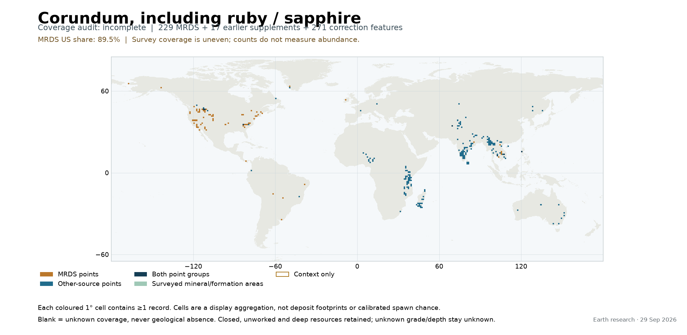
Only 14 MRDS country labels and 90% US records. Industrial corundum, ruby and sapphire cannot share an unconditional gem-quality rule.
Resource review · Baseline points
271 correction point links; 0 correction area links. Sources overlap; these are not unique deposits.
Emerald
Coverage incomplete · not ready for generation
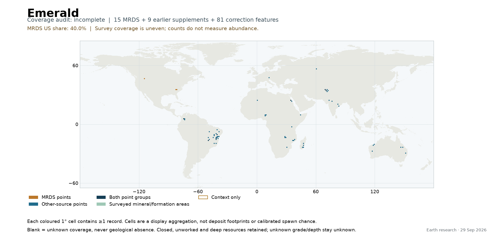
Fifteen baseline records cannot represent global emerald geology. GEMDATA is a useful locality complement, not formation coverage.
Resource review · Baseline points
81 correction point links; 0 correction area links. Sources overlap; these are not unique deposits.
Olivine; gem grade not assured
Coverage incomplete · not ready for generation
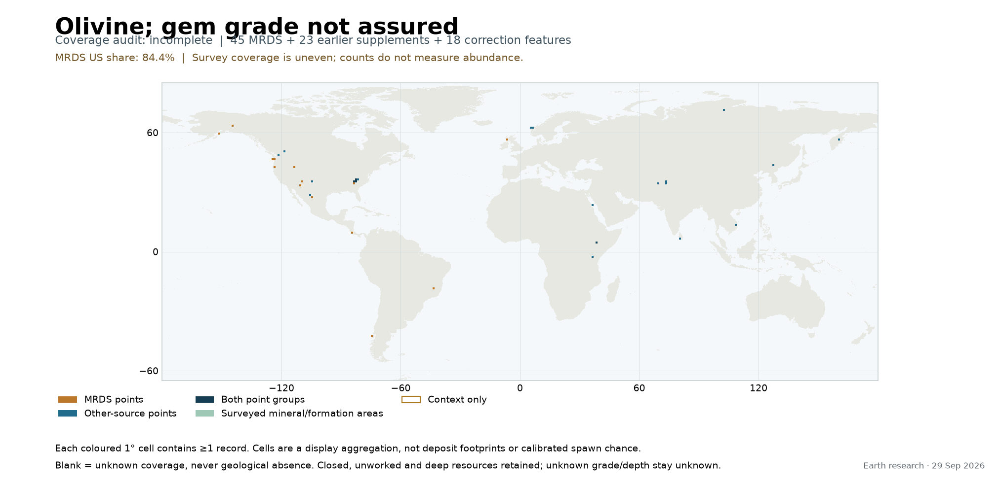
Forty-five baseline records conflate industrial rock-forming olivine with peridot gemstones. Mine points understate widespread suitable lithology.
Resource review · Baseline points
18 correction point links; 0 correction area links. Sources overlap; these are not unique deposits.
Garnet; species / gem grade not assured
Coverage incomplete · not ready for generation
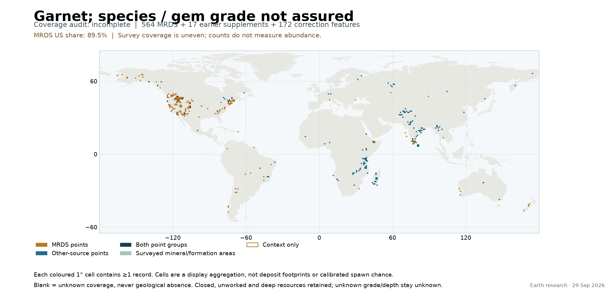
US-biased industrial records and sparse gem records do not describe common garnet-bearing rocks. Gem species/grade must remain separate.
Resource review · Baseline points
172 correction point links; 0 correction area links. Sources overlap; these are not unique deposits.
Lapis lazuli
Coverage incomplete · not ready for generation
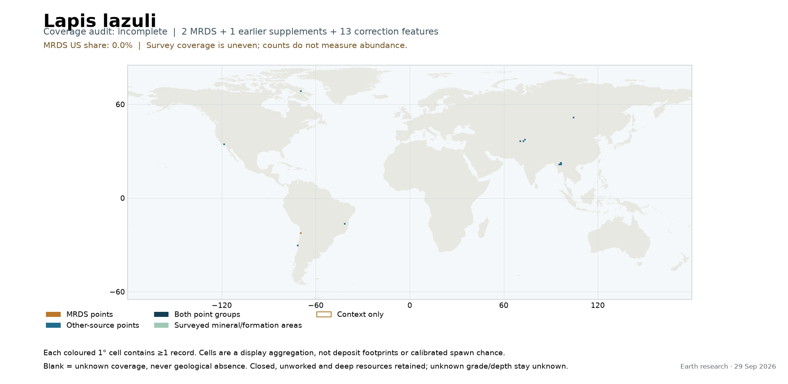
Two baseline records from one country are a severe coverage failure. Host association is specialized; blue rock or generic limestone is insufficient.
Resource review · Baseline points
13 correction point links; 0 correction area links. Sources overlap; these are not unique deposits.
Alum / alunite evidence
Coverage incomplete · not ready for generation
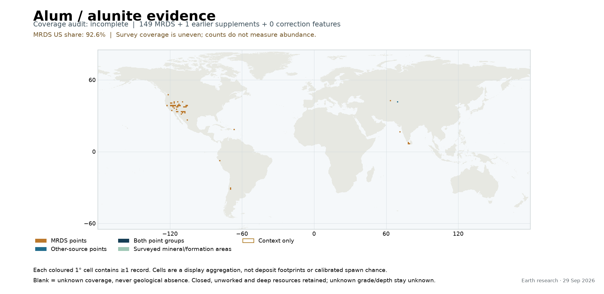
Five-country, 93% US mineral-mention map omits historical shale feedstocks. Alunite, natural alum salts and manufactured alum are different resources.
Resource review · Baseline points
0 correction point links; 0 correction area links. Sources overlap; these are not unique deposits.
Topaz; colour / gem grade not assured
Coverage incomplete · not ready for generation
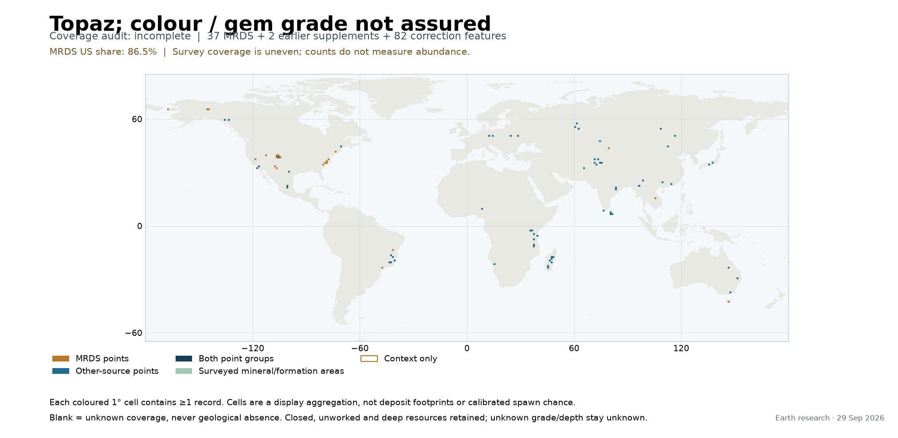
Thirty-seven baseline records in five countries miss broad known gemstone districts. Colour and recoverable crystal quality are not identified by ordinary topaz occurrence.
Resource review · Baseline points
82 correction point links; 0 correction area links. Sources overlap; these are not unique deposits.
Tourmaline; species / gem grade not assured
Coverage incomplete · not ready for generation
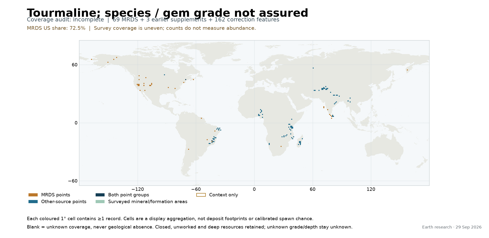
Ore-only 69-record baseline excludes widespread accessory/gangue tourmaline and many gem localities. Black schorl does not imply coloured elbaite gems.
Resource review · Baseline points
162 correction point links; 0 correction area links. Sources overlap; these are not unique deposits.
Beryl; colour / gem grade not assured
Coverage incomplete · not ready for generation
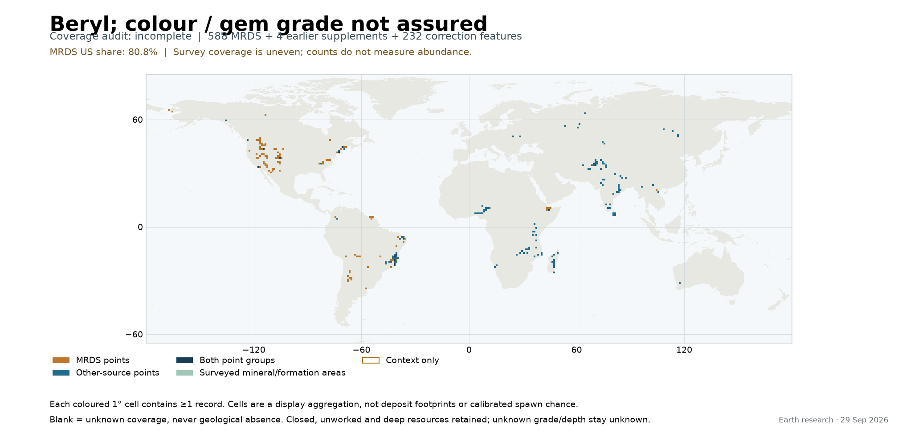
Industrial beryl/beryllium, aquamarine and other colours cannot be inferred from one another. Existing points do not describe pegmatite province potential.
Resource review · Baseline points
232 correction point links; 0 correction area links. Sources overlap; these are not unique deposits.
Spinel; colour / gem grade not assured
Coverage incomplete · not ready for generation
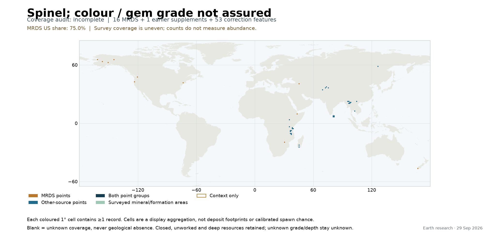
Sixteen baseline records in five countries are far from global. Generic spinel-group minerals or ultramafic rocks do not establish gem spinel.
Resource review · Baseline points
53 correction point links; 0 correction area links. Sources overlap; these are not unique deposits.
Research snapshot: 29 September 2026. Source credits, rights, geometry scale and acquisition checks are in each corrections subfolder. Some legacy research sources need location and redistribution review before any runtime use. Records may refer to the same geological district; record counts never multiply abundance.